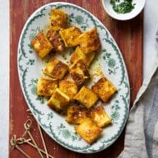

Paneer Butter Masala Recipe

Ingredients
- 7 oz packaged paneer
- 2 tbsp Oil
- 1/4 tsp turmeric
- 1/2 tsp coriander pwdr
- 1/2 tsp cumin pwdr
- 1/2 tsp paprika
- Salt
Steps
- Cut the paneer into thin slices, about 1/4 to 1/2 inch thick. Then, cut each slice into 1-inch pieces. Transfer the paneer into a mixing bowl.
- In a small bowl, mix 1 tablespoon of olive oil, turmeric, coriander, cumin, paprika, and salt together. Drizzle this spiced oil over the paneer and toss to coat with the spices. You may need to use your hands to rub the spices into the paneer.
- Heat a skillet with 1 1/2 tablespoons of olive oil over medium heat. Add the paneer pieces and pan fry for about 3 to 4 minutes, until they are golden brown. Flip the pieces over to pan fry the other side. Cook for another 2 to 3 minutes, until golden brown. Transfer the fried paneer to a plate.
- Dust the paneer with paprika. Sprinkle with chopped chives and a small pinch of flaky sea salt, if desired. Serve with basmati rice or coconut rice.